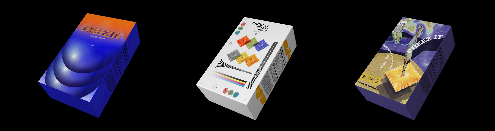

Cheez-it
Print, Packaging
2019
Analyzing different styles of artists, I was asked to select a snack to redesign its package. I recreated the covers of Cheez-It crackers. I broke down core elements of style including typeface, shapes, image treatment and rule lines. Out of 10 style studies, I chose 3 designs and developed further into a real-life size mockups.
Software Used
Adobe Creative Suite